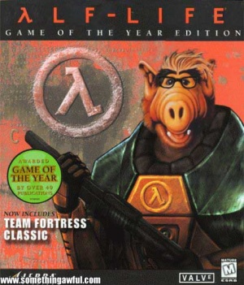

Gordon Freeman
 De: La Frikipedia, la enciclopedia extremadamente seria.
De: La Frikipedia, la enciclopedia extremadamente seria.
| De la serie héroes del mundo:
|
| Gordo Hombre Libre
|
|
|
| Alias
|
El hombre mudo, Dr.Hombrelibre, Barba Candado, el barbudo gafapasta de la palanca, el violador de aliens.
|
| Superpoderes
|
Que no le pregunten cosas, poder transportar muchas armas pesadas, follar correr sin agotarse, subir escaleras de espaldas sosteniendo un arma con las dos manos mientras se masturba e incluso tomar órganos de extraterrestres y utilizarlos como "armas".
|
| Novia
|
Desconocida, probablemente no haya sobrevivido a sus "palancazos".
|
| Enemigos
|
Wallace Breen, el Ejército Combo, los xenofilianos, IP anónima y probablemente yo.
|
| Ciudad donde actúa
|
Nuevo México, en Estados Unidos y Ciudad 17.
|
| Carácter:
|
Autista.
|
| ¿Es malo o bueno?
|
Bueno, a pesar de haber "liquidado" a docenas de soldados.
|
| Vestimenta
|
Un traje de protección con colores naranja y negro, unas gafas de pasta y una "palanca".
|
| Grupo al que pertenece
|
Grandes ñoños Héroes de la humandiad
|
| Antecedentes
|
Haber nacido de una palanca y un contador geiger.
|
| ¿Natural o artificial?:
|
Pseudonatural.
|
| Secuelas
|
Half-Life 2:Episodeo Tés.
|
| Juegos que protagoniza
|
Half-Love.
|
«Dadme un punto de apoyo, y moveré el mundo.»
~ Arquímedes sobre el poder de la palanca de Gordon
Gordon Freeman (Gordo Hombrelibre en Caca Mesλ, quien ha ocasionado un incidente donde debe pelear contra Xenofilia, Ger-Men le ofrece un trabajo que consiste en violar matar muchos enemigos peligrosos en el planeta. Hasta ahora su objetivo es seguir masacrando humanoides, extraterrestres y grandes máquinas de guerra enemigas. Sus conocimientos de física teórica sobrepasan los de Einstein porque es un nerd que se ha logrado aprender de memoria las reglas de la ciencia. Usualmente, cuando alguien lo molesta, recibe un palancazo de su parte ya que es un ser muy duro. El resto de su vida se dedicará a viajar en el tiempo para enfrentarse a las razas alienígenas más temidas de la galaxia y a los mounstros más fuertes, con ayuda de su escopeta y su palanca.
Sobre él
 Gordon Freeman recuperándose de las secuelas que fueron generadas por la
radiación.
Del señor Freeman se puede decir que en un principio era científico investigador de los laboratorios Blas Mesa, aunque después de unos problemas con unos experimentos en el recinto y tras comprobar su verdadero potencial jugando al Counter Strike y al DOOM, fue con sus viciadas donde se notaron sus verdaderas dotes. Sí, es cierto, él era un buen científico, pero viendo sus capacidades de poder llevar encima a la vez una palanca, una revólver, una escopeta, una ametralladora (con lanzagranadas), una ballesta, un arma experimental conocida en el mundo entero como "el arma de rayos", "la mangera" o, en casos complejos, "la secadora"; un lanzamisiles, un arma alienígena conocida mundialmente como "el arma de las avispas que te persiguen", paquetes explosivos, un dar cera entre los alienígenas facinerosos y a ser el tío más duro del barrio ya que tenía posibilidades de ocupar el puesto que Duke Nukem Forever nunca va a tener porque nunca va a salir. Todo ello por supuesto sin contar las múltiples cargas para todos entre lo que destaca llevar 5 misiles de recambio para el lanzamisiles (lógicamente no va a ser para la pistola) y, aunque sin peso, también recordar la radioactividad del "arma de rayos" y los "bichos cabrones que te persiguen", que por lo visto en la maleta no deben atacar. A todo este equipo hay que añadir un traje especial desarrollado en Black Mesa y eventualmente una especie de propulsor para dar brincos. Gordon Freeman también es conocido por ser el portador de un extraño artefacto arcano: las Gafas de Pasta... Dicho esto se ve claramente las fantásticas dotes destructivas de las que Freeman está dotado.
Debido a las gafas de pasta no puede usar Ningun' escaner de retina en todo el juego(eso que es uno de los mayores cientificos de la base) y necesita el tener un aliado cientifico que le abra la puerta de su casa,del baño...etc.
Tambien se le ha emparentado con el hombre invisible, ya que Freeman jamás se ha visto a si mismo, en todas sus aventuras, del primer y segundo juego junto con las expansiones, no se ha topado con un espejo donde reflejarse, pero si con la más extrañas criaturas y objetos, pero realmente su problema es que si se inclina hacia abajo, no se ve la piernas, y lo que es peor, no se ve el cipote.
Hechos sobre Gordon Freeman
Gordon Freeman antes de que lo detuvieran por violación con palanca
Artículo principal: Anexo:Hechos sobre Gordon Freeman
Actualmente es conocido por sus grandes hazañas:
- Gordon Freeman realizó un experimento en Caca Mesa, y con ello ha desarrollado una serie de cambios en el Oniverso, que ocasionaron la teletransportación de una raza alienígena en el planeta, la cual intenta acabar con la suciedad.
- Gordon Freeman puede molestar a sus colegas si
le sale de los cojones le viene en gana, como cuando les arroja objetos contundentes, se hace el tonto enfrente de sus caras o incluso golpearles el rostro con su palanca sin que le digan nada.
- Gordon Freeman es un adicto al azúcar
y al sexo con alienígenas y a los refrescos, que curan su cáncer de pene pierna. Además los ingiere gratis de las máquinas expendedoras.
- Gordon Freeman se cura graves heridas de bala, fuertes golpes, caidas mortales desde cien metros, mordeduras, quemaduras y explosiones de grandes dimesiones con sólo pisar un pequeño botiquín de primeros auxilios.
- Cada mañana antes de ir al trabajo bebe una docena de cervezas y botellas de vodka junto a Barney(no es el dinosaurio) en el Bar de Moe.
- Sin embargo, sigue con el mismo equilibrio de sobriedad.
- Gordon Freeman tiene una colección completa de alienígenas y cadáveres de policías, agentes gubernamentales y soldados en su oficina.
- Gordon Freeman utiliza extravagantes extraterrestres como armas imitando a los monstruos que elimina.
- Gordon Freeman puede permanecer sólo en un tranvía deprimente que toma todos los días para ir al trabajo (siempre se escucha por megafonia la repetitiva voz de una persona haciendo publicidad) parado tranquilamente y sin quejarse ni enloquecerse.
- Gordon Freeman es una persona poco comunicativa en la sociedad (se cree que es autista), la gente le brinda sermones y discursos largos en su trabajo, pero luego del inciedente todos son amigables con él y lo siguen adonde vaya (para mas tarde ser violados por este).
- Gordon Freeman ,aunque siendo un "sencillo" y "humilde" científico graduado con excelente currículum en física teórica del M.I.T. , es capaz de utilizar con increíble profesionalismo absolutamente todas las armas que encuentre o objetos que tenga uso como tal, desde armas comunes (incluido un consolador), hasta armas muy pesadas y complejas e incluso armas que ni siquiera existían en el planeta, además de utilizar "como armamento" a los extraterrestres. En una entrevista por escrito, había agradecido a sus profesores en el campamento de Rambo donde aprendió todas estas tácticas de combate tras sobrevivir días sin comer en la jungla.
- Gordon no camina, la tierra se mueve por él.
- Gordon lleva muchos años muerto, pero las bacterias no se atreven a descomponerlo.
- Gordon Freeman se ha subido encima de un tanque pesado y ha logrado hacerlo explotar a base de una buena cantidad de golpes con palanca (probablemente su barra metálica es mágica y posee electricidad estática).
- Gordon Freeman ha convertido una tragedia de tiroteos en un juego de plataformas donde imita a Mario yendo con rapidez por tuberias y haciendo "megasaltitos" corriendo (solo que Gordon sí se hace daño si se cae),con la diferencia que el tiene un mejor bigote e inclusive se impulsa por medio de un láser.
- Gordon Freeman ha sobrevivido a los extraterrestres xenofilianos e incluso a unos alienígenas con forma de larvas voladoras (los Combo) que llegan para destruir el planeta, luego de haber escapado de Black Mesa eludiendo a unos soldados enviados por el gobierno para eliminar a los testigos
de la orgia del desastre, además de que luego intervienen unos ninjas cabrones que vienen a volar todo hacia la puta mierda. Sin embargo, es absolutamente incapaz de matar a un sencillo hombrecillo de traje azul, ya que parece estar protegido detrás de una coraza de cristal.
- Gordon Freeman es el único capaz de subir escaleras estando de espaldas, corriendo y sosteniendo un arma con sus dos manos mientras se masturba.
- Gordon Freeman siempre escucha con claridad conversaciones privadas de radio cuando los soldados enemigos se comunican.
- Gordon Freeman puede sobrevivir a un disparo de lanzacohetes en su rostro (recueden que su traje no ha de llevar casco como los de otros científicos que viajan a Xen).
- Gordon Freeman conduce un automóvil sin coger el manillar ni pisar el acelerador. De hecho ni siquiera necesita la llave del coche.
- Gordon Freeman puede saltar, salir volando por una explosión, caer desde una gran altura, nadar en radiación (sin su casco), entre otras actividades peligrosas, sin desmayarse ni que se le caigan las gafas.
- Gordon Freeman, por alguna razón, aparece siempre junto al paquete de Counter-Strike.
- Gordon Freeman coloca en su lugar el conector de una gran máquina sin utilizar sus manos.
- Gordon Freeman utiliza objetos y pulsa botones sin usar las manos.
- Gordon Freeman puede hablar, pero permanece muchísimas horas sin decir una palabra. Jamás se cansa.
- La gente dirige palabra a Gordon Freeman sin que diga absolutamente nada.
- Gordon Freeman viste su traje con sólo caminar por al lado.
- Gordon Freeman puede bucear llevando la palanca en la mano :o
- Gordon Freeman altera la paz de todos los cuerpos presentes con una palanca.
- Gordon Freeman es el responsable de la masacre palanquistica de black mesa y nadie le dice nada al respecto
Pensamiento de Freeman
Entre los pensamientos (es mudo) míticos del Gordon Freeman destacan:
- Con tu capacidad de abrir puertas y la mía de abrir cajas con una palanca...haremos un equipo excelente.
- Daría la mitad de mi cerebro por saber que lleva ese hombre en el maletín.
- Vale,bien, si vienes conmigo te usaré de escudo humano y viviré mas tiempo...
- Sabía que había algo raro en empujar solo un simple carrito...
- Ohhh... ¿Para qué sirve este botón?...
- ¿He sido yo......? (justo tras haber recuperado el conocimiento y ver el desastre que ha hecho)
- La pistola de ese guardia es muy bonita...' (pensando en cualquier macabrada con su palanca)
- Me encanta joder a un colega científico...hehehe' (pensando en cualquier cosa rara,no sabemos si se refiere a su "palanca")
- Mhh!(gordon mirando el trasero de Alyx)
- Ojala hubiese cogido el papel de House (Gordon delante de un zancudo)
- Esta noche le podria dejar el culo orguero a este tipo (mientras mira a Gman)
- Muahahahahah (cuando ve la masacre de cientificos)
- Me estoy cagando encima (matando a Nihilant)
- Iiiiiiiiaaarrrgg!!! (en los aseos de Black Mesa)
- Uuuuaaaaah *bostezo* (matando zombies)
- Dios tio como huele me cago en la puta (oliendo el culo de Eli)
- El barco pirata de Peter Pan está cojo (mientras juego con sus playmovil)
- jajaja (mientras escribe un articulo en la wikipedia)
- El bicho este tiene cosas colgando de la boca (mientras le destroza la cara con la palanca)
- Tiene cara de ballena (mientras atiende a Gman)
- Joder (cuando falla su ballestazo directo a la cabeza)
- Dios que cara mas fea tiene el cabron (observando de lejos a Shepard)
- ¿¡Cuantos cohetes necesita para morirse!? (mientras pelea con un zancudo)
Vida amorosa
Se sabe que esta casado con un hijo, pero aun asi tiene relación amorosa conocida es la que mantuvo con Alyx Vance la tia buena del juego, hija de su amiguete Eli Vance, la cual esta loca por el y le acompaña a traves de 2 sagas del juego ayudandole a cargarse soldados modificados por fuerzas alienigenas y gente zombie infectada por una especie de pollo desplumado y sin cabeza. Gordon no le dice ni hola (esto da paso a la teoria de que Gordon es homosexual)
Futuros palanquetazos
Después de su incursión en la música bajo el seudónimo de Eric Clapton, Freeman se encuentra en paradero desconocido. Pero se cree que puede hallarse en los estudios de Valve, en un proyecto cuyo nombre en clave pudiera ser "Half-Life 3" y del cual nadie en el universo conocido se puede imaginar de qué se puede tratar...
Artículos relacionados
Autor(es):
- Krusher
- Nexo
- Fordus
- Er Makina
- Ole
- Jarlaxle
- Joim
- Simoman
- Kenedhor
- Piranna
Frikipedia 2005-2016, Licencia
GFDL 1.2 - Extraído por FrikiLeaks